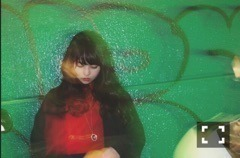
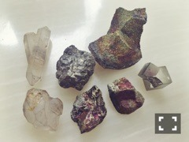
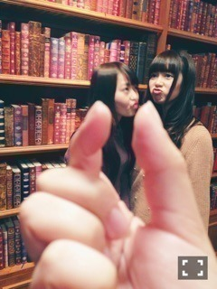

| 2015/04 21 Tue | 確率と確立。638回目 |
最近映画アイズの取材がありました〜
アイズの公式ツイッターに
映画のいろんな場面が
載っているみたいなので
ぜひ見てみてください！


ミネラルフェスタ行ってきました。
たくさんの鉱物を見てきた！
隣の餃子祭の匂いに
誘われそうになったけど
寄り道せず行ったよ^^
例えば洞窟の中にある結晶とか
石を叩き割って出てきた結晶とか
どうやってできたのか
どうしてこんなに綺麗なのか
最近小林健二さんの世界に
浸ってたから前より
鉱物に興味が出てきているー
男の子が恐竜に興味を持つような
好奇心が湧いてくる。
恐竜も好きだけど、
鉱物とにらめっこして4時間。。
厳選した鉱物

こうして大切なガラクタが
増えてくのだ、

POKERFACE発売中。
前回呼んでいただいたのをきっかけに
今回も呼んでいただきました
嬉しい嬉しい
前髪流したりでこ出したり
久しぶりに新鮮だった
伊織と共にかっこよく
撮っていただいたので、
本屋さんで探してね！
26日 ラジオドラマ(17:00〜17:55)
NISSAN あ、安部礼司〜BEYOND THE AVERAGE〜
奈々未を中心に
ひなちまと私の3人が出演します。
30日 月刊エンタメ
よろしくお願いします。

アンダーライブ3rdシーズン
2日目と千秋楽観に行きました〜
千秋楽はサイリウムを持って
煽り曲でノリノリに振ってたのと、
乃木詩思いっきり踊ったのに
メンバーも気づいてくれて
手振ってくれました！
観る側になってみて
気づいたことが沢山ありました。
自分が立っていた状況を思い出して
みんなの踊ってる姿を見てたら
いろんな気持ちが
こみ上げてきました。
自分が舞台にいる時と同じように
お客さんの一体感に乗せられて
自然に盛り上がってました。
メンバーとファンの方の熱量の
ぶつけ合いが良いライブを
生むんだと改めて思った。
本当にお疲れ様でした！
まりか
コメント(636)
2015/04/21 21:18